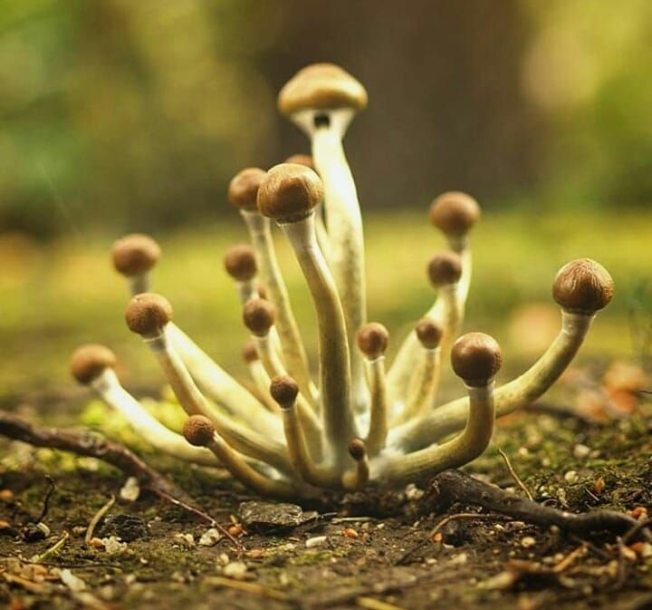
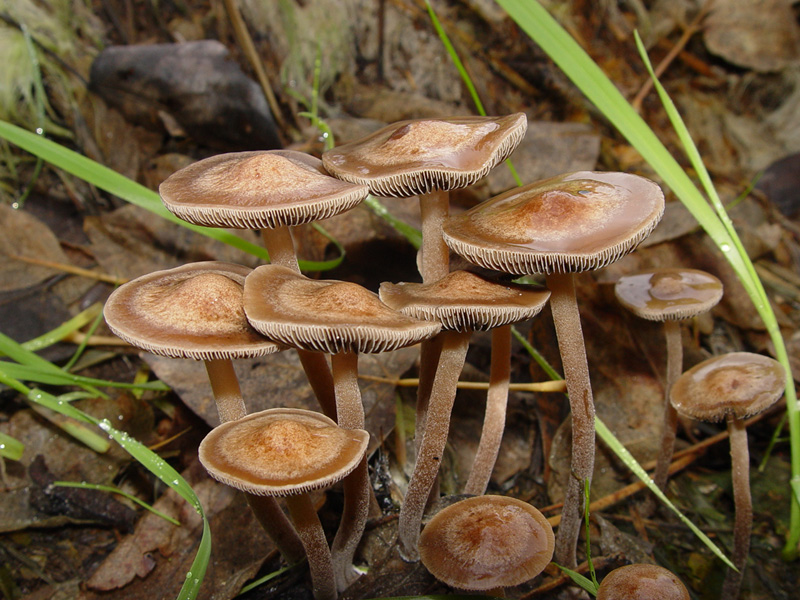
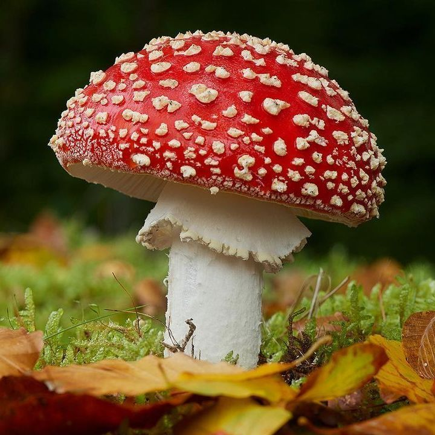
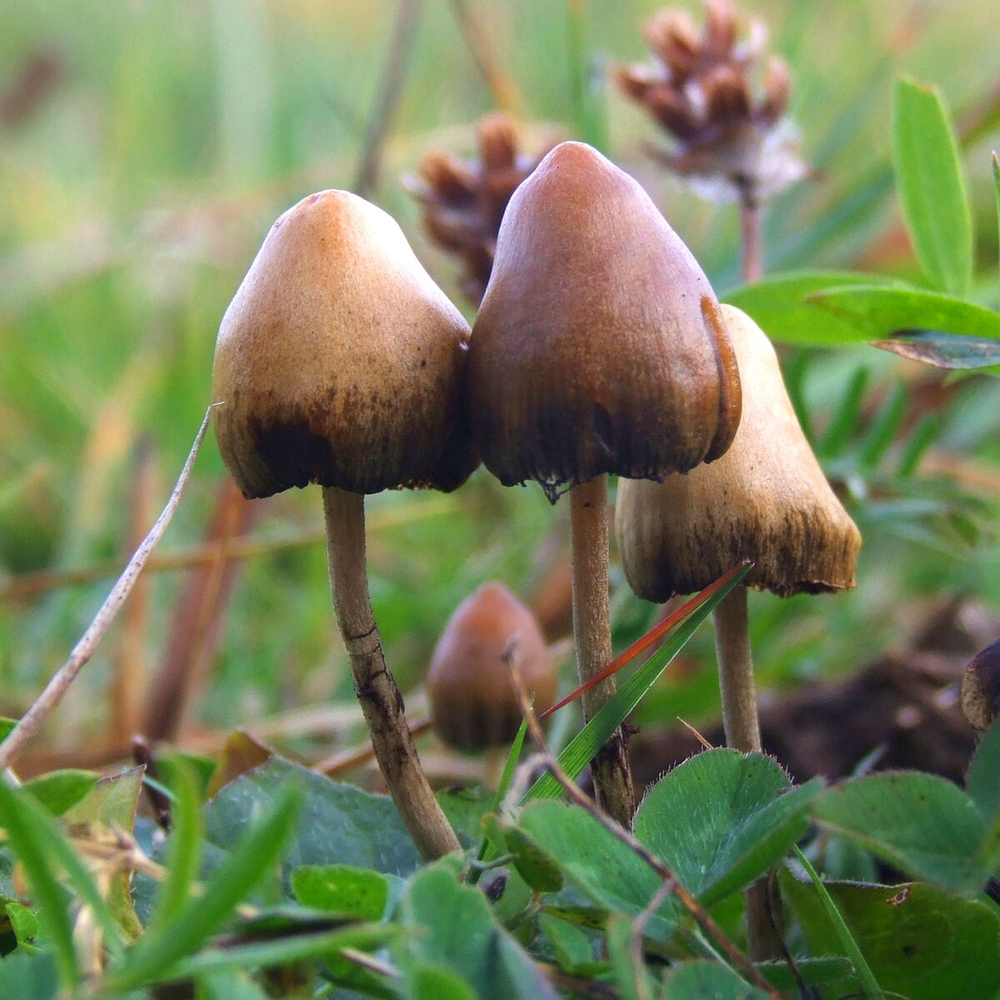

Welcome to Cogulândia
Avisos importantes:
- 🚫 Ilegal na maioria dos países, inclusive no Brasil.
- 🥴 Efeitos fortes e às vezes desconfortáveis, exige cuidado e ambiente seguro.
- ☠ Risco de confusão com cogumelos tóxicos, identificação errada pode ser fatal.
Tipos de cogumelos
Psilocybe cubensis

O mais famoso cogumelo psicodélico. Chapéu marrom-dourado e caule branco. Seus
efeitos.
- Alucinações visuais
- Introspecção profunda
- Sensação de expansão da consciência.
Panaeolus cyanescens

Fino, escuro e cresce em esterco, contém alta concentração de psilocibina. Seus efeitos:
- Viagens intensas, rápidas e profundas
- Alterações fortes de percepção.
Amanita muscaria (Liberty Cap)

Diferente dos outros, não contém psilocibina, icônico cogumelo vermelho com pintas
brancas (parece o do Mario). Seus efeitos:
- Delírios
- Visões
- Confusão mental
Psilocybe semilanceata (Liberty Cap)

Pequeno, com chapéu em forma de sino e ponta afiada, muito usado em rituais antigos na
Europa. Seus efeitos
- Intensas mudanças visuais e sensoriais